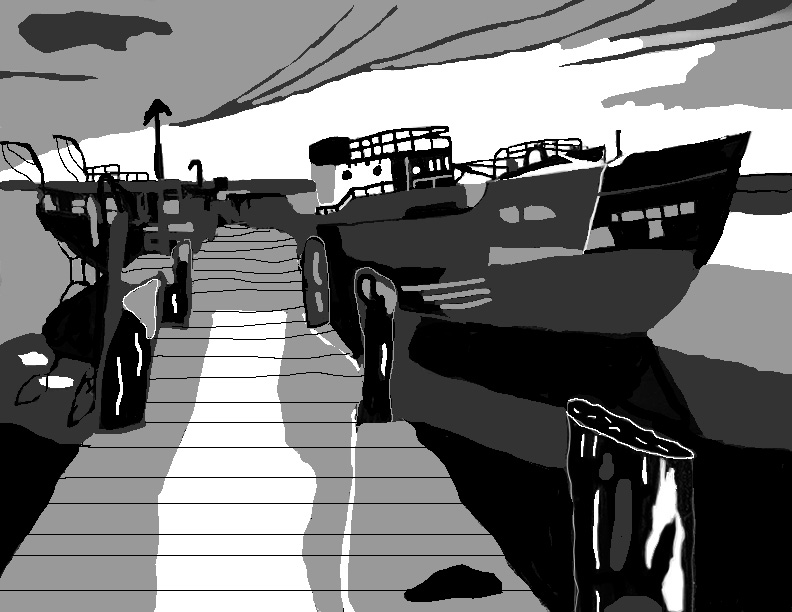

Learning how to take a picture that I took and turn it into a cartoon.
Learning how to take a picture that I took and turn it into a cartoon.
Learning how to use similar colors to make a full picture. Loved using different fonts as well.
 Photo collaboration. Took small pictures and added it into one large scene. Was a lot of fun and made me even more creative after this.
Photo collaboration. Took small pictures and added it into one large scene. Was a lot of fun and made me even more creative after this.
Another picture of taking a photo and turning it into a cartoon.
Layering a picture of Joan Jett with a tree. The pattern of the tree comes through into her hair.
Photo montage of myself in multiple locations. Took many pictures and layered them into one scene.
Learning how to use brushes and different shades of black

Creating a full picture with just black/grey/white.
 Font project I did. Initially I didn't think I would learn much from this assignment, but I learned layout, color placement, and layering.
Font project I did. Initially I didn't think I would learn much from this assignment, but I learned layout, color placement, and layering.
2017 Bryan Currier